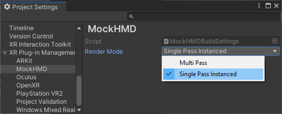

VR and most MR devices require rendering the Unity scene in stereo. Unity XR supports two stereo render modes:
Note: The earlier technique of rendering the scene into a double-wide texture using a single render pass is no longer available.
See How to maximize AR and VR performance with advanced stereo rendering for background information. Single-pass instanced stereo rendering is now available on most VR platforms.
You can find the Render mode setting under XR Plug-in Management in Project Settings. Each XR provider plug-in provides its own setting, if supported.
To set a render mode:
Open Project Settings (menu: Edit > Project Settings).
Expand the XR Plugin Management section, if necessary.
Select the settings page for the relevant provider plug-in.
Choose a mode from the list.

Render mode options in the MockHMD provider plug-in
Note: Some plug-ins name the setting Stereo Rendering Mode.
Single-pass instanced render mode is supported on the following platforms and devices:
VPAndRTArrayIndexFromAnyShaderFeedingRasterizer extension.GL_NV_viewport_array2GL_AMD_vertex_shader_layerGL_ARB_shader_viewport_layer_arrayIf you set the Render Mode to Single Pass Instanced when that mode is not supported, then rendering falls back to multi-pass mode.
Note: Unity doesn’t support single-pass stereo instancing in the built-in, legacy render pipeline when using deferred rendering.